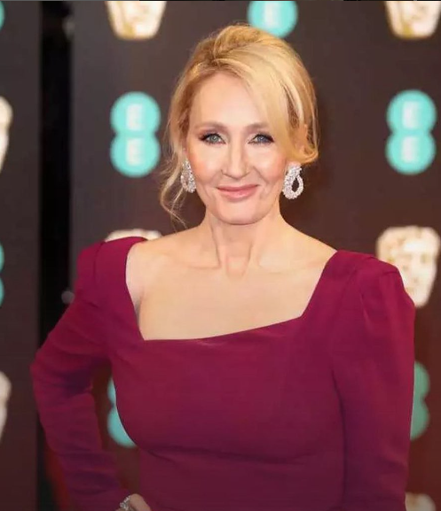

“Rock bottom became the solid foundation on
which I rebuilt my life.”
— J.K. Rowling
“Rock bottom became the solid foundation on
which I rebuilt my life.”
— J.K. Rowling
Joanne Rowling is best known as the author of the Harry Potter fantasy series, the best-selling book series till date. She used the pen name “J.K. Rowling” on being asked by her publishers, who thought that young boys might not want to read a book written by a woman. Despite this, the most interesting facts about Rowling’s life go well beyond her name and fame. In 1990, Rowling was on a train from Manchester to London when she conceived the idea of a young boy attending wizard school. Surprisingly, she finished the first book in the series, Harry Potter and the Philosopher’s Stone, in 1997. This seven-year period was the toughest phase in her life.
BIOGRAPHY
CAREER
J.K. Rowling (born July 31, 1965, Yate, near Bristol, England) British author, creator of the popular and critically acclaimed Harry Potter series, about a young sorcerer in training. From an early age Joanne wanted to be a writer. She wrote her first book at the age of six – a story about a rabbit called Rabbit. When she was eleven she wrote a novel about seven cursed diamonds and the people who owned them. J.K. Rowling took approximately six years to complete the first Harry Potter book, "Harry Potter and the Philosopher's Stone." However, the entire series took around 17 years to write and publish, with the final book, "Harry Potter and the Deathly Hallows," being released in 2007.EDUCATION
Her first day at Tutshill Church of England school in September 1974 was not a success. She scored only half a mark out of ten in a test that led to her being positioned on the less intellectual side of the class. Her natural ability soon shone through and she was promoted.She graduated from the University of Exeter.MARRIAGE
On December 26, 2001, Rowling married anesthetist Dr. Neil Murray at the couple's home in Scotland. They have two children together, David (born in 2003) and Mackenzie (born in 2005). Rowling has one child, Jessica (born 1993), from her previous marriage.EMPLOYMENT
After graduating from university, Rowling had several jobs, including working as a bilingual secretary and researcher at Amnesty International's London offices. She then moved to Manchester, where she worked for the Chamber of Commerce. She still enjoyed writing, but it was more of a hobby than a career at that time.CONTRIBUTIONS
She co-founded the charity Lumos and established the Volant Charitable Trust, named after her mother. Rowling's charitable giving centres on medical causes and supporting at-risk women and children. In politics, she has donated to Britain's Labour Party and opposed Scottish independence and Brexit.Books written
The first Harry Potter book, Harry Potter and the Philosopher’s Stone, was published in 1997 to immediate popular and critical acclaim. Six further best-selling books and eight blockbuster films followed. The books have been translated into 85 languages, won multiple awards, and sold more than 600 million copies worldwide, becoming the best-selling book series in history.. In 2016, a new era of the Wizarding World was unveiled with the launch of Fantastic Beasts and Where to Find Them, an original screenplay by J.K. Rowling and the first in a major film series for Warner Bros. Pottermore Publishing is the global digital publisher of the Harry Potter series and Fantastic Beasts film tie-ins, as well as other digital audiobooks and eBooks from the Wizarding World.You can get more information about books click here